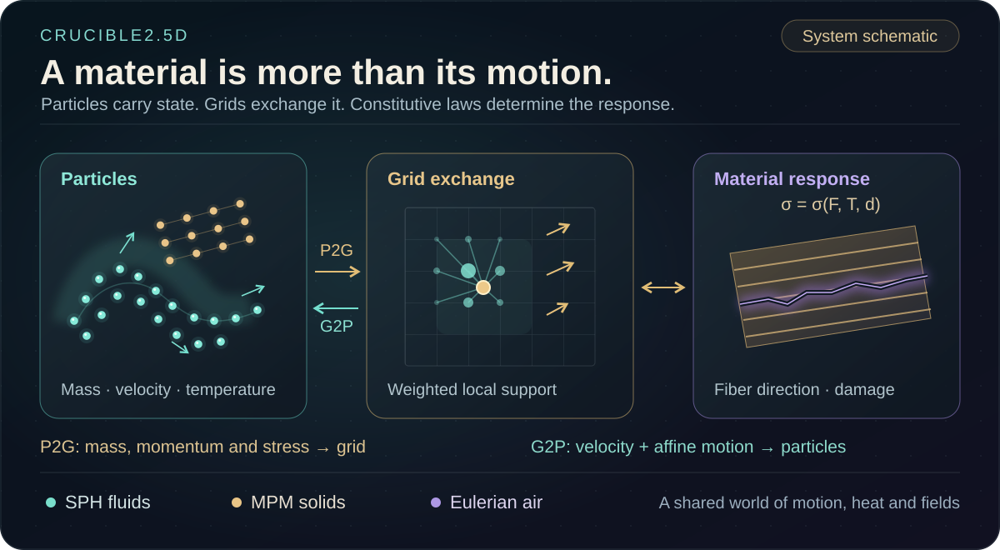
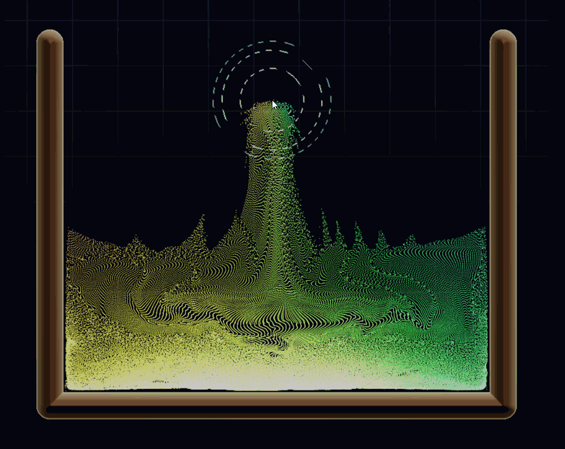
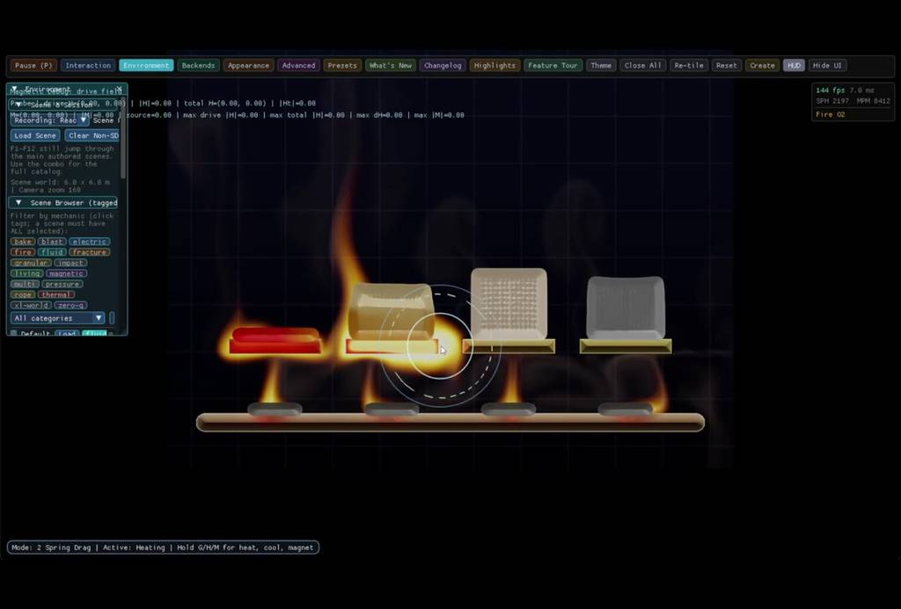

Crucible2.5D
A 2D testbed for advanced material simulation: MPM solids, SPH liquids and Eulerian air exchange motion and heat. Anisotropic tearing, thermal processing and magnetic lift become experiments you can intervene in and inspect.
- ◈
MPM solids
Transfer particles to a grid; update stress, deformation and directional damage.
- ≋
SPH liquids
Use particle neighborhoods to estimate density and local fluid forces.
- ∇
Eulerian air
Advance grid fields for flow, heat and combustion.
- ↔
Couple the worlds
Exchange impulses and heat; inspect how material history changes the response.
Keeping the world planar makes coupled experiments readable within an interactive performance budget; pores, load paths and field-shaped peaks still differ from their 3D counterparts.



One MPM particle, nine grid nodes
One MPM particle, nine grid nodes
Draws with
Artifact
Export
Purpose
Made with
Demonstrates
Wheel over the scene may zoom; move outside it to scroll the page.
Suspended · activate to run; playback pauses after the full panel leaves the vertical viewport.